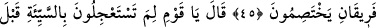

SEMÛD KAVMİNE
SÂLİH’İ GÖNDERDİK
45. Andolsun ki, “Allâh’a kulluk edin!” (demesi için) Semûd kavmine kardeşleri
Sâlih’i gönderdik. Hemen birbiriyle çekişen iki zümre oluverdiler.
46. Sâlih dedi ki: Ey kavmim! İyilik dururken niçin kötülüğe koşuyorsunuz?
Allah’tan mağfiret dileseniz olmaz mı? Belki size merhamet edilir.
47. Şöyle dediler: Senin ve beraberindekilerin yüzünden uğursuzluğa uğradık.
Sâlih: Size çöken uğursuzluk (sebebi), Allah katında (yazılı) dır. Hayır, siz imtihana
çekilen bir kavimsiniz, dedi.
48. O şehirde dokuz kişi (elebaşı) vardı ki, bunlar yeryüzünde bozgunculuk
yapıyorlar, iyilik tarafına hiç yanaşmıyorlardı.
49. Allâh’a and içerek birbirlerine şöyle dediler: Gece ona ve âilesine baskın
yapalım (hepsini öldürelim); sonra da velisine: “Biz (Sâlih) âilesinin yok edilişi
sırasında orada değildik, inanın ki doğru söylüyoruz” diyelim.
50. Onlar böyle bir tuzak kurdular. Biz de kendileri farkında olmadan, onların
planlarını altüst ettik.
51. Bak işte, tuzaklarının âkıbeti nice oldu: Onları da; (kendilerine uyan)
kavimlerini de (nasıl) toptan helâk ettik!
52. İşte haksızlıkları yüzünden çökmüş evleri! Anlayan bir kavim için elbette
bunda bir ibret vardır.